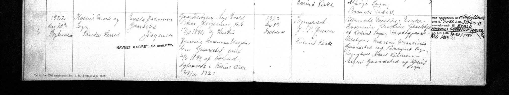
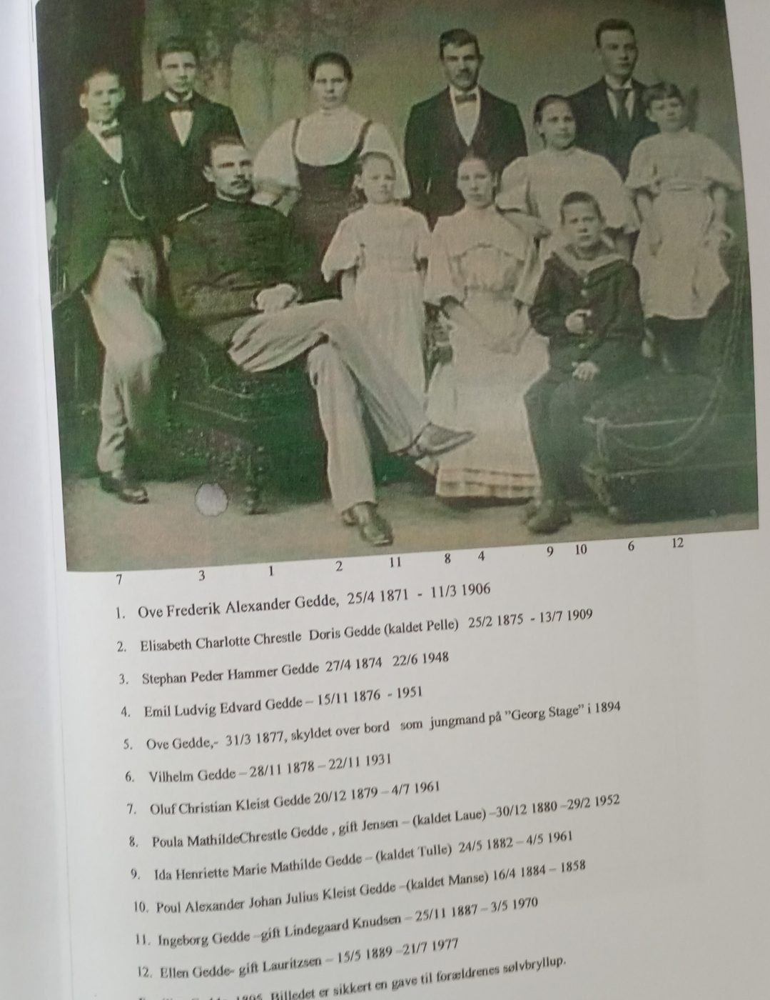
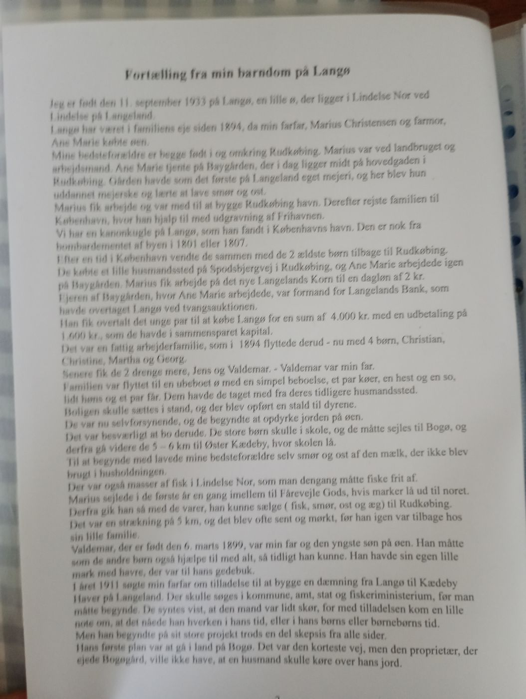
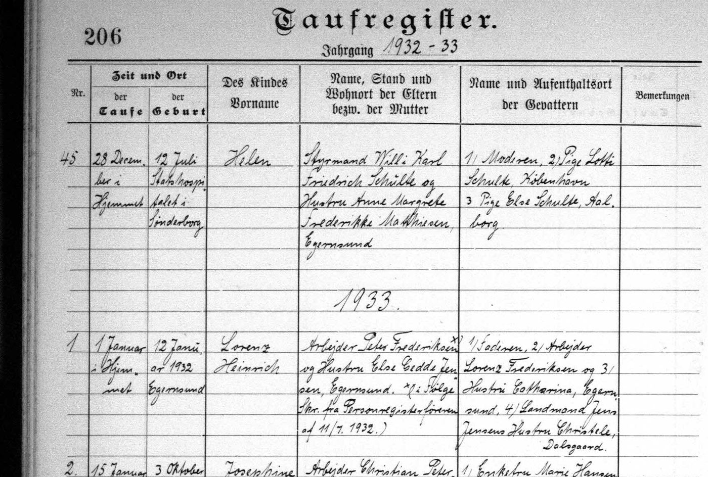
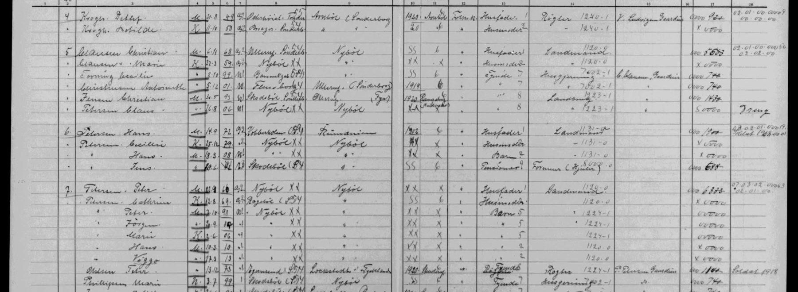
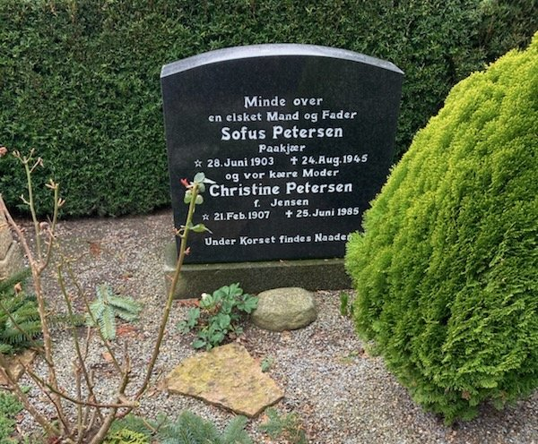
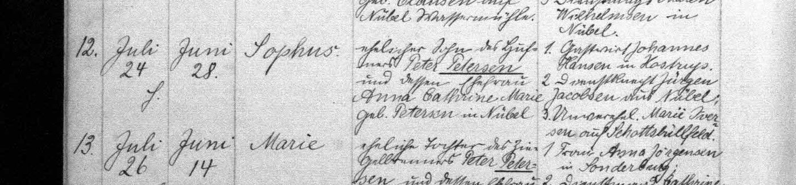
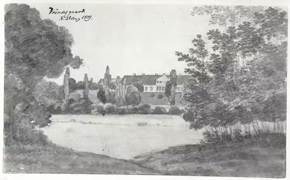

Evalds fødsel, Kolind 1922
Kolind kirkebog, fødte drenge 1922 nr. 6. Forældre: Aage Evald Oskar Jørgensen og Jensine Mariane Magdalene Gaardsted. Randnoten om navneforandringen 1985.

Kolind kirkebog, fødte drenge 1922 nr. 6. Forældre: Aage Evald Oskar Jørgensen og Jensine Mariane Magdalene Gaardsted. Randnoten om navneforandringen 1985.

Edvard Hammer Gedde og Mathilde Ludvigsens 12 børn, sikkert taget som gave til forældrenes sølvbryllup. Nr. 8 er oldemor Paula Mathilde Chrestle Gedde (kaldet Laue), gift Jensen.

'Hr. Forpagter Gaardsted paa Vosnæsgaard og hans Kone Kirstine Marie Jørgensdatter … Barnet var fød d. 23de Sept. … kaldet Jochum.'

Lisbeth Skov om bedsteforældrene Marius og Ane Marie: arbejdet på Rudkøbing havn og i Frihavnen, købet af Langø i 1894 for 4.000 kr. og børnene Christian, Christine, Martha, Georg, Jens og Valdemar.

Lisbeth Skov, født Christensen, barnebarn af Marius og Ane Marie: 'Min farfar og farmor, Marius og Ane Marie Christensen købte Langø i 1894.' Med luftfoto af dæmningen og stuehuset på Langø.

Silkeborg kirkebog, fødte piger 1931 nr. 25: 'Lis Pedersen', født 18. april på Drewsensvej 14. Forældre: maskinarbejder Jens Nielsen Pedersen og Hulda Kristensen.

Broager Vestre distrikts kirkebog, 1933 nr. 1: Lorenz Heinrich, født 12. jan. 1932 i Egernsund. Forældre: Peter Frederiksen og Else Gedde Jensen.

Gårdmand Peter Petersen i Nybøl med familie og tjenestefolk, og øverst Detlef og Botilde Krogh. Paakjær og Snogbæk ligger begge i Nybøl-egnen.

'Sofus Petersen, Paakjær, * 28. Juni 1903 † 24. Aug. 1945' og hustruen Christine Petersen f. Jensen (1907–1985). Gravstenen står på Nybøl Kirkegård. Gravstenen dokumenterer navn og datoer for Sofus og Christine, men beviser ikke i sig selv et faderskab. Familien har fremsat hypotesen om, at Sofus var Lorenz' biologiske far.

Nybøl kirkebog 1903 nr. 12: døbt 24. juli, født 28. juni, 'Sophus', ægte søn af gårdmand Peter Petersen og hustru Anna Cathrine Marie f. Petersen i Nybøl.

Tegning af O.J. Rawert, 1839. Claus Gaardsted forpagtede herregården i 1780'erne og 90'erne, og Jochum blev født her.